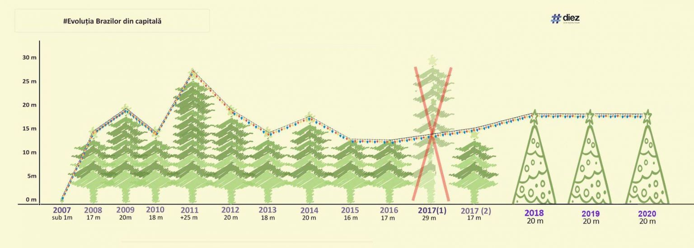
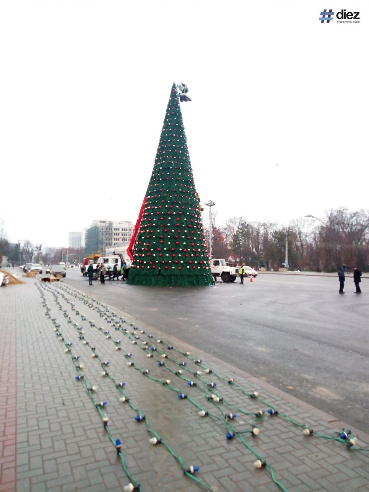
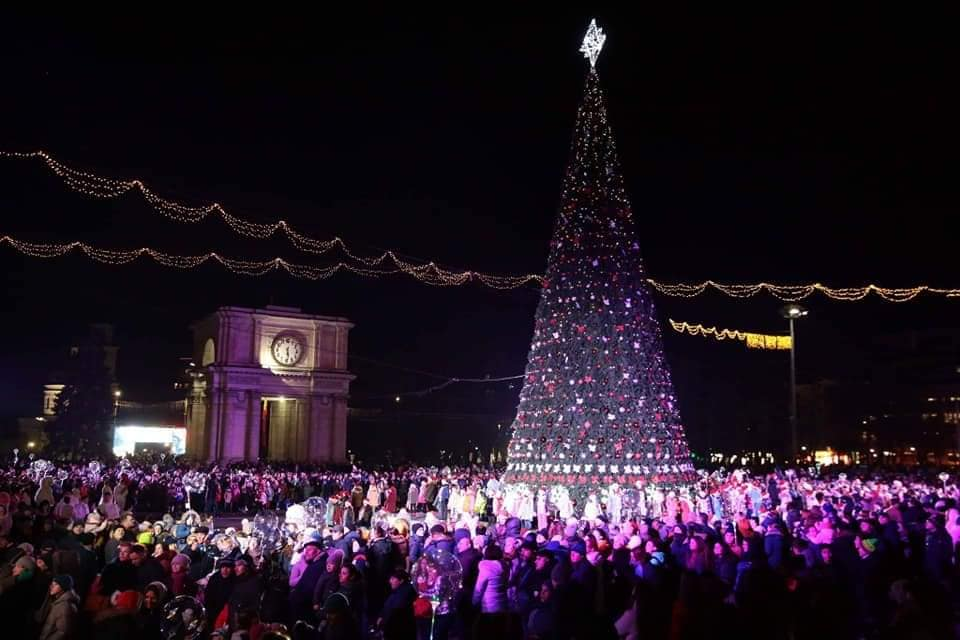
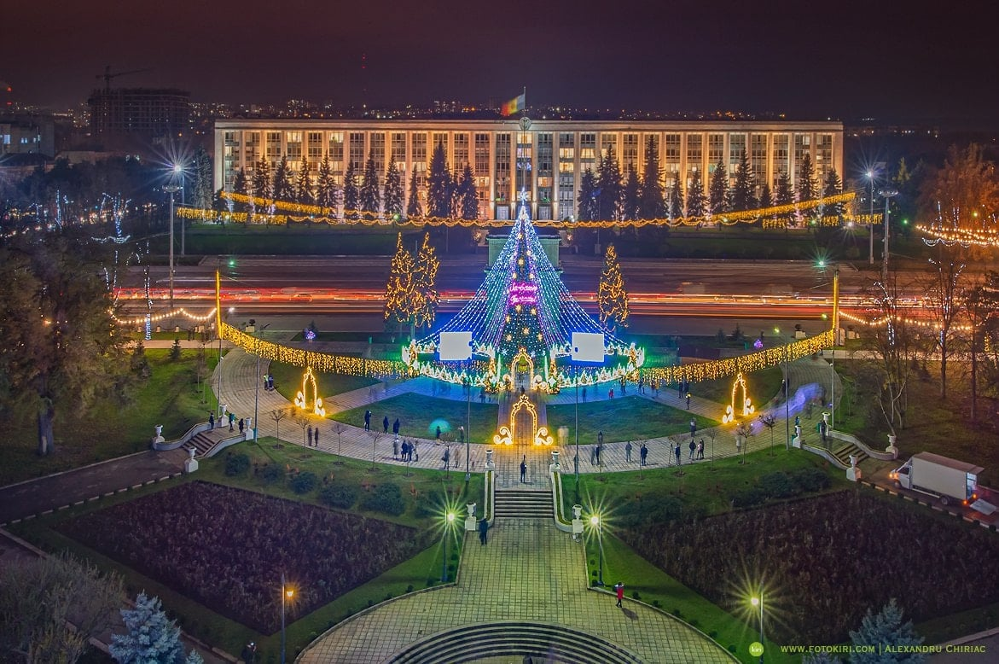
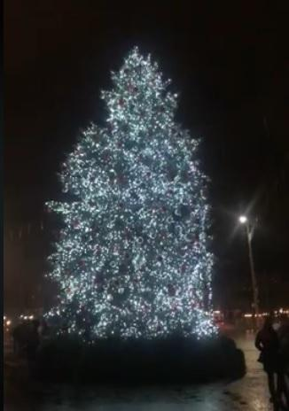

(foto) Balada bradului chișinăuian.
Ce peripeții și istorii au avut pomii de Crăciun din capitală de-a lungul anilor.
A fost odată ca niciodată, că de n-ar fi, nu s-ar mai povesti, un pom de Crăciun în centrul Chișinăului. De fapt, au fost mai mulți.
Mai mari, mai mici. Mai bogați în ramuri sau aproape fără de ele. Naturali și artificiali. Erau chișinăuieni, din Ialoveni și Criuleni, iar unul tocmai din Ucraina era.
Unii au strălucit falnic pe durata tuturor sărbătorilor de iarnă, iar alții nu au rezistat nici măcar o zi. După cum deja ați înțeles,
în acest articol vă prezentăm povestea brazilor instalați de-a lungul anilor în centrul capitalei.
Începem cu cel mai rezistent brad. În anul 2018, în centrul Chișinăului a fost instalat cel mai pacificator pom de Crăciun.
Acesta nu a fost numit urât, nu a adus pierderi forestiere pădurilor și nici nu scoate bani din bugetul municipiului în fiecare an, pentru că este unul artificial.
Tot acest brad a fost vedeta Pieței Marii Adunări Naționale în anul 2019 și tot el ne va bucura ochii și în acest an.
Ce-i drept, până a ajunge la această decizie au fost multe discuții, totuși varianta cu bradul artificial se pare că a împăcat aproape toată lumea.
Pomul de Crăciun din anii 2018, 2019 și 2020 are o înălțime de 20 de metri și este realizat dintr-o construcție de metal acoperită cu pânză verde.
Acest brad este mai înalt decât media brazilor din anii precedenți și un pic mai scund decât cel adus de primara interimară din 2017,
Silvia Radu, care a fost expus doar jumătate de zi în PMAN. Totodată, acesta este mai înalt decât media pomilor naturali instalați pe timpul lui Dorin Chirtoacă.

# Bradul anului 2018, 2019 și 2020
Pomul de Crăciun are înălțimea de 20 de metri și este artificial. Potrivit autorităților, primăria a achitat, în 2018, doar „trei metri din brad”.
Restul au fost dăruiți de un agent economic, unul dintre liderii de pe piața locală în ceea ce privesc ghirlandele și decorațiunile de Crăciun.
În imaginea de mai jos vedeți cum a arătat bradul în anul 2018, atunci când a fost expus pentru prima dată.

În anul 2019, bradul a fost instalat exact în același loc și arăta în felul următor.

În acest an (2020), bradul a rămas același, doar că a fost schimbată locația.
Acesta a fost amenajat în Scuarul Catedralei Mitropolitane „Nașterea Domnului”, în preajma Porților Sfinte și arată în felul următor.

# Bradul anului 2017
În 2017, Chișinăul, la un moment dat, avea doi brazi în Piața Marii Adunări Naționale. Competiția a fost câștigată de un brad de la Botanica.
Pomul de Crăciun se afla în sectorul Botanica, pe strada Zelinski, în curtea unei foste grădinițe. Pentru a-l tăia și a-l aduce în centrul orașului,
lucrătorii au fost nevoiți să taie mai mulți brazi din curte pentru a face loc de trecere.
După ce a fost tăiat, fostul ministru al mediului, Valeriu Munteanu, a declarat, printr-o postare pe pagina sa de Facebook,
că bradul instalat în PMAN de primarul interimar Silvia Radu a fost tăiat ilegal, iar prejudiciile aduse mediului sunt de câteva zeci de mii de lei.
Silvia Radu, la fel, a scris o postare unde a infirmat acuzațiile și aici povestea s-a terminat.
Noul brad a fost plătit din banii personali ai primarei interimare de atunci, Silvia Radu. Pomul de 17 metri a fost împodobit cu 1 150 de globuri și patru kilometri de beculețe.

Lista va fi actualizată.